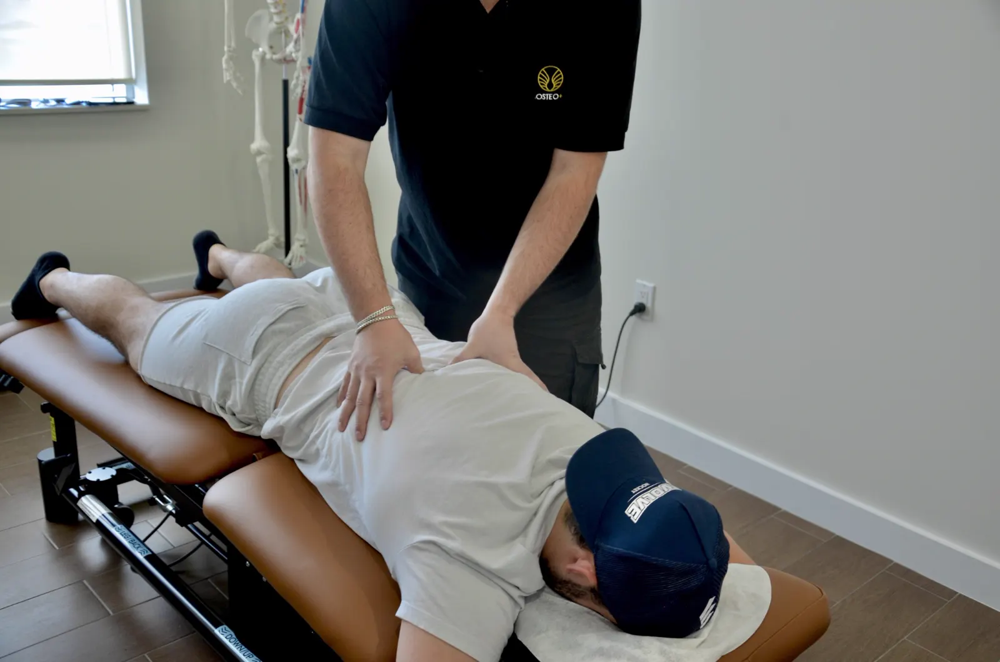
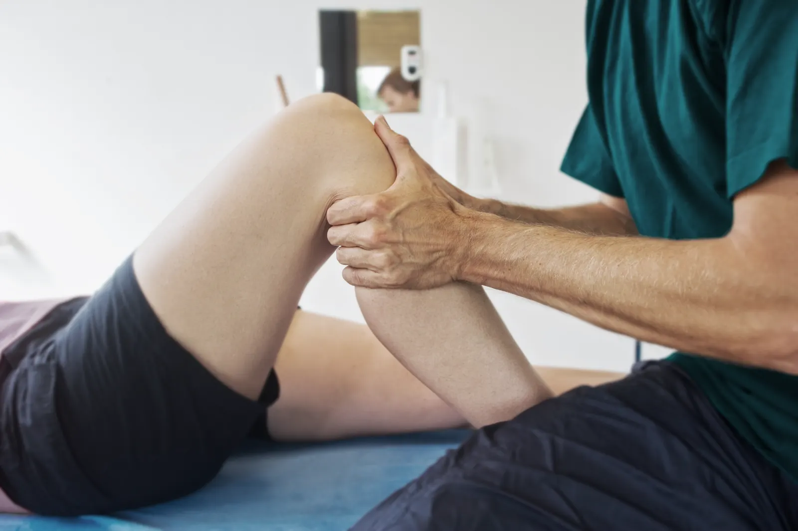
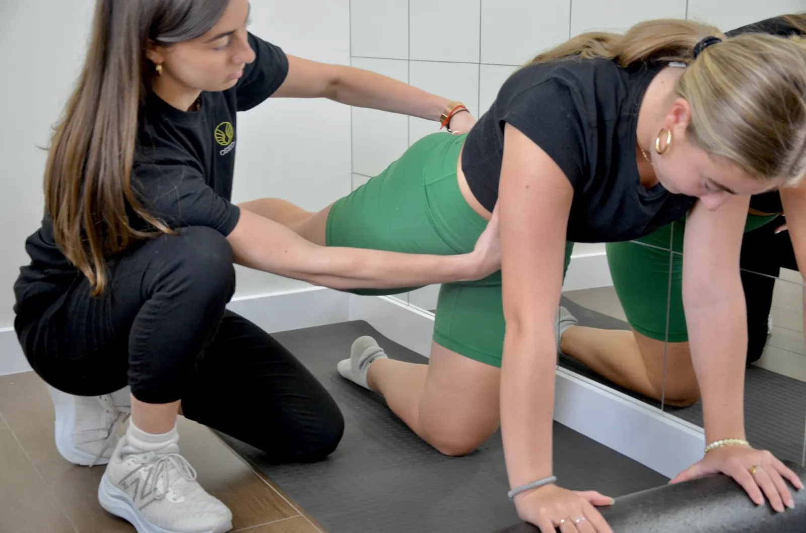
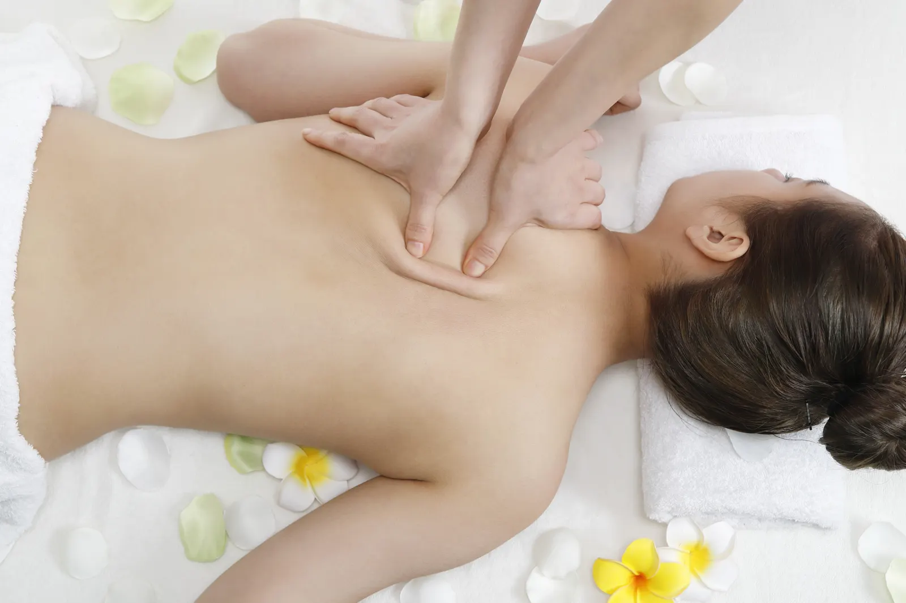
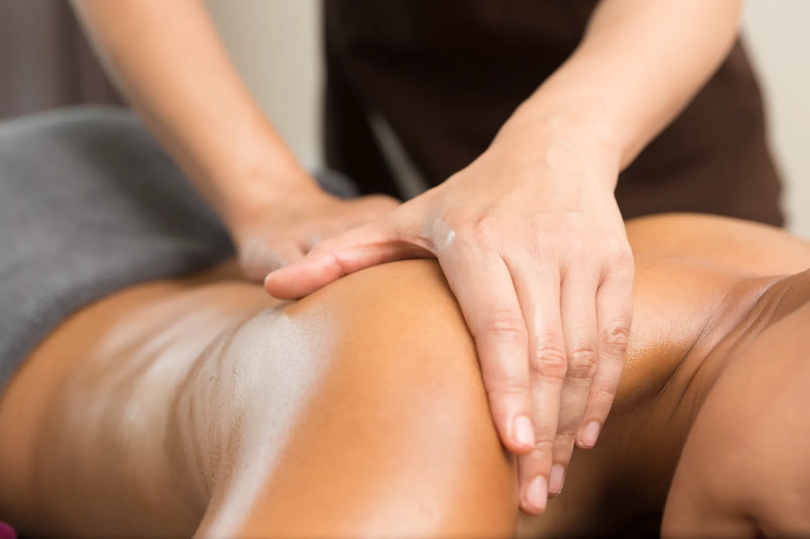
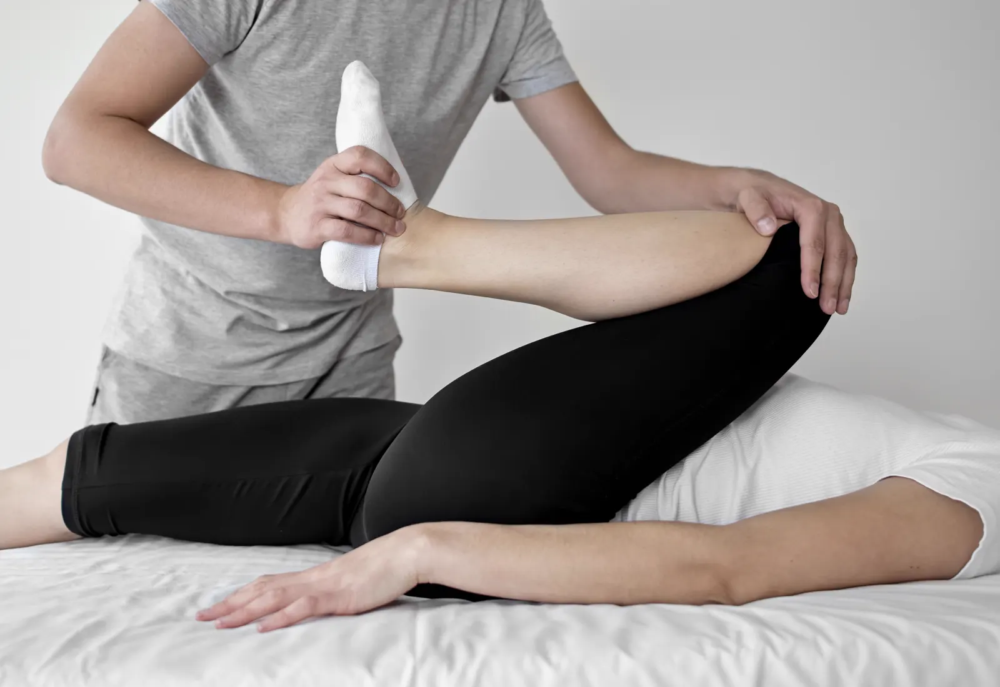
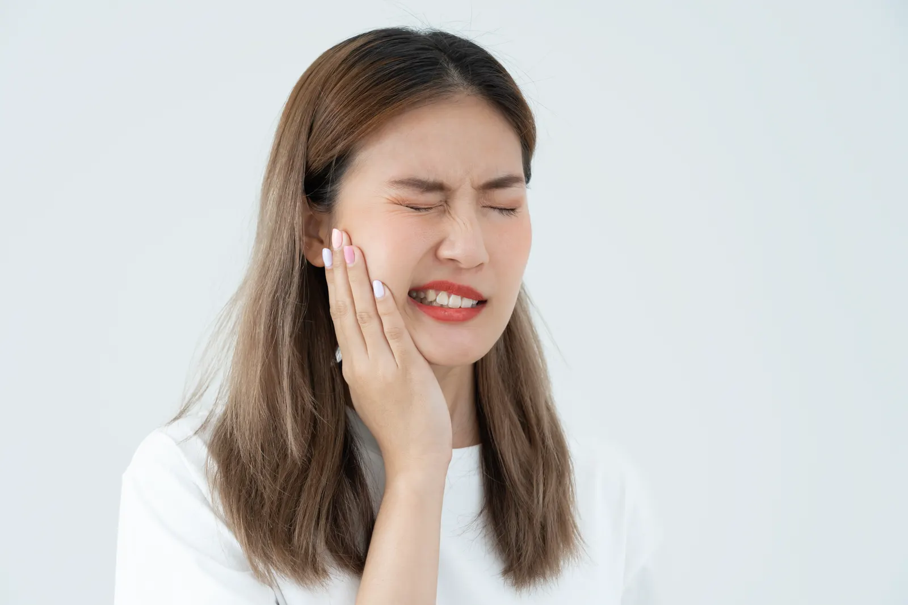
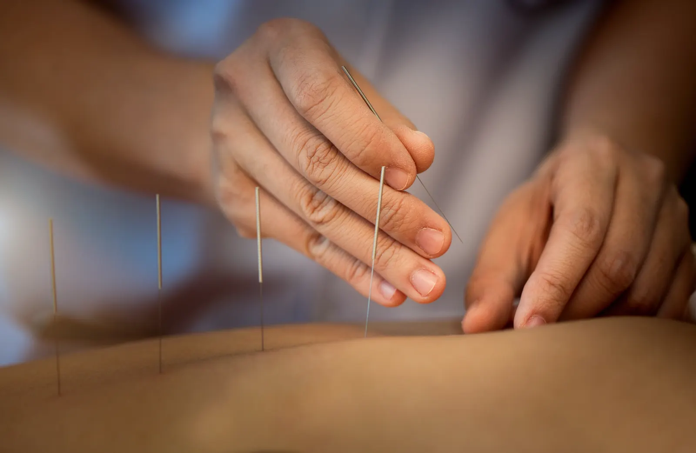
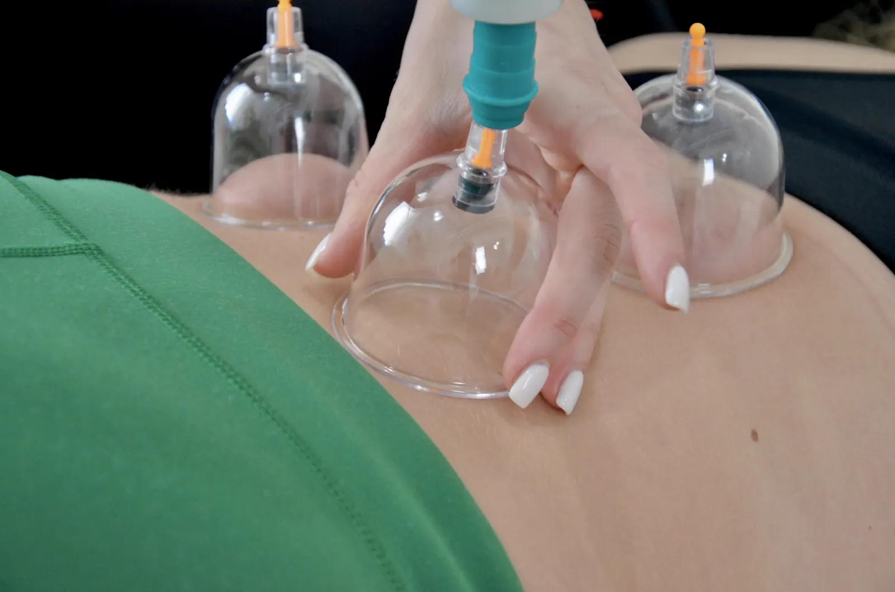
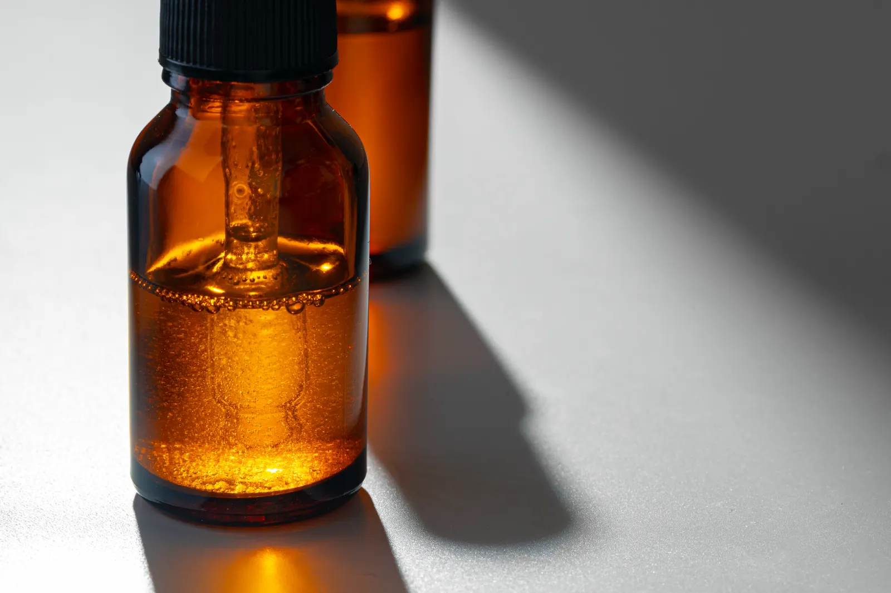

Our services
Treatments at OSTEO+ Thornhill
OSTEO+ offers osteopathy, physiotherapy, athletic therapy, registered massage therapy, therapeutic sports massage, fascial stretch therapy, TMJ treatment, acupuncture, cupping, naturopathy, Brazilian lymphatic drainage and kinesiology taping, all in one clinic on Disera Drive.
Manual & movement therapy
-

Osteopathy
Hands-on treatment of muscles, joints and connective tissue to ease pain and restore movement. From $100 -

Physiotherapy
Evidence-based rehab for injuries, post-surgical recovery, chronic pain and movement problems. From $100 -

Athletic Therapy
Assessment, treatment and rehab for sport, activity and posture-related injuries. From $90 -

Registered Massage Therapy
Manual techniques by Registered Massage Therapists to relieve pain, relax muscles and improve function. From $90 -

Therapeutic Sports Massage
Deep, focused work on tense or painful muscle groups, for athletes and desk workers alike. From $90 -

Fascial Stretch Therapy
Gentle assisted stretching that targets the fascia to improve range of motion and ease pain. From $80 -

TMJ Treatment
Massage and acupuncture approaches for jaw pain, clicking, locking and tension headaches. From $90
Traditional & natural medicine
-

Acupuncture
Very thin needles at strategic points to ease pain, stress, migraines and more. From $80 -

Cupping Therapy
Suction cups on the skin to increase circulation and relieve muscle tension. Part of treatment -

Naturopathy
Naturopathic Doctors blending evidence-based medicine with natural therapies to treat root causes. From $120
Specialty treatments
Every service, side by side
| Service | What it’s for | Session lengths | Price | Tax |
|---|---|---|---|---|
| Osteopathy | Hands-on treatment of muscles, joints and connective tissue to ease pain and restore movement. | 30, 45, 60 min | From $100 | HST may apply |
| Physiotherapy | Evidence-based rehab for injuries, post-surgical recovery, chronic pain and movement problems. | 30, 45, 60 min | From $100 | No HST |
| Athletic Therapy | Assessment, treatment and rehab for sport, activity and posture-related injuries. | 30, 45, 60 min | From $90 | HST may apply |
| Registered Massage Therapy | Manual techniques by Registered Massage Therapists to relieve pain, relax muscles and improve function. | 30, 45, 60, 90 min | From $90 | HST may apply |
| Therapeutic Sports Massage | Deep, focused work on tense or painful muscle groups, for athletes and desk workers alike. | 30, 45, 60 min | From $90 | HST may apply |
| Fascial Stretch Therapy | Gentle assisted stretching that targets the fascia to improve range of motion and ease pain. | 30, 45, 60, 75 min | From $80 | HST may apply |
| TMJ Treatment | Massage and acupuncture approaches for jaw pain, clicking, locking and tension headaches. | 30, 45 min | From $90 | HST may apply |
| Acupuncture | Very thin needles at strategic points to ease pain, stress, migraines and more. | 30, 45, 60 min | From $80 | No HST |
| Cupping Therapy | Suction cups on the skin to increase circulation and relieve muscle tension. | Within other treatments | — | — |
| Naturopathy | Naturopathic Doctors blending evidence-based medicine with natural therapies to treat root causes. | 30, 45, 60, 75 min | From $120 | No HST |
| Brazilian Lymphatic Drainage | Gentle, rhythmic massage that reduces fluid retention and supports digestion and detox. | 60, 90, 120 min | From $165 | HST may apply |
| Kinesiology Taping | Strips of special tape that support joints, muscles and tendons and help correct posture. | Within other treatments | — | — |